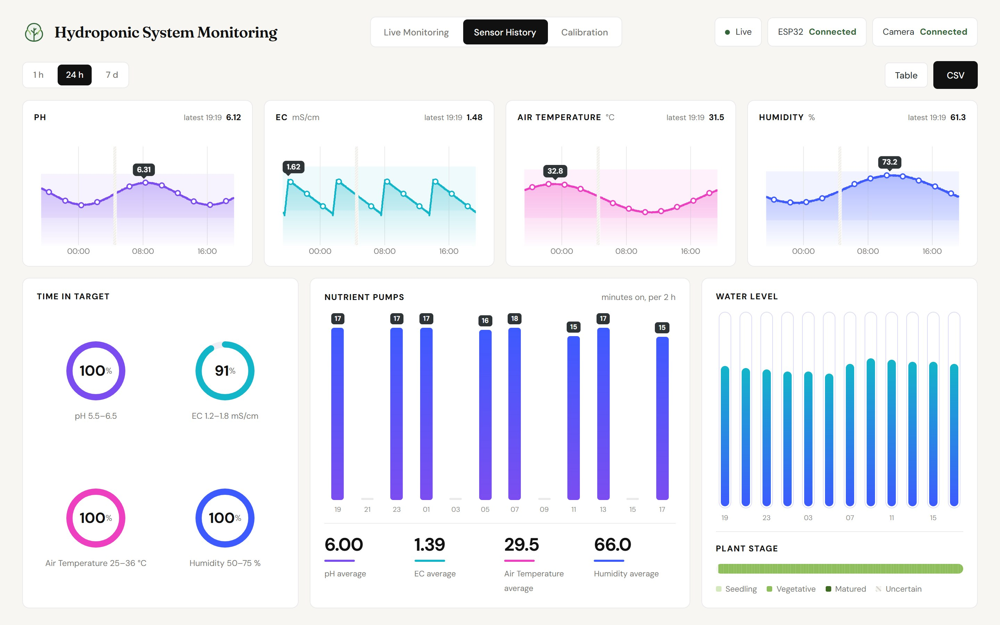

05
Hydro · Innovation 2026 · Document 5 of 5
Dashboard Overview
A tour of the offline web dashboard: Live Monitoring, Sensor History and Calibration. It runs on the Raspberry Pi 5 and opens full screen on the HDMI monitor at boot.
Tab 1 · Live Monitoring
What is happening right now
 1
2
3
4
5
6
7
8
9
1
2
3
4
5
6
7
8
9
Screenshot taken 13 Nov 2026 by running the dashboard on a PC with simulated sensor data and a dataset photo; on the rack the same page shows live values.
1Tabs: Live Monitoring, Sensor History, Calibration.
2Status chips: MQTT link, ESP32 and camera connected or not.
3Live plant photo from the MaixCAM, refreshed every 10 s.
4Plant result: health, growth stage, size, AI confidence, Save photo.
5Sensor tiles: pH, EC, air temperature (Cold / Stable / Hot) with the target band.
6Pump mode: Auto or Manual, and whether the tank is OK.
7Pumps: Nutrient A, Nutrient B, Sampling, each ON / OFF.
8Plant vision: canopy %, yellowing %, green index.
9Water tank: level %, the 20 % low line, water height, distance to surface.
Hydro · 05 Dashboard OverviewSensor History tab
Tab 2 · Sensor History
How the system has been doing
History comes from the CSV session logs on the Pi through server.py. Pick a range, read the trends, export the data.

1
2
3
4
5
6
7
1Range: last 1 h (every 2 s), 24 h (1-min averages) or 7 days (10-min averages).
2Table shows the numbers; CSV downloads the log rows for the range.
3Charts: pH, EC, air temperature, humidity. The shaded band is the target; hatched gaps mean no data. Hover one chart to see the same moment on all four.
4Time in target: share of the range each value spent inside its band.
5Nutrient pumps: minutes ON per time slot, plus the average of each sensor.
6Water level over the range.
7Plant stage strip from the camera log: seedling, vegetative, matured or uncertain.
Target bands used for shading
| Value | Target band | Chart scale | Colour |
|---|
| pH | 5.5 – 6.5 | 5.0 – 7.0 | violet |
| EC | 1.2 – 1.8 mS/cm | 0.8 – 2.0 | cyan |
| Air temperature | 25 – 36 °C | 20 – 40 | pink |
| Humidity | 50 – 75 % | 40 – 85 | blue |
Hydro · 05 Dashboard OverviewCalibration tab and access
Tab 3 · Calibration
Guided sensor calibration
Step-by-step calibration for the EC probe, the pH probe and the tank level. Commands go to the ESP32 on hydro/cmd; its replies appear on the page.
1Choose a sensor: EC (~5 min), pH (~10 min) or tank level (~15 min).
2Step bar: e.g. EC: Start → 1413 µS/cm → Save → Restart → 12.88 mS/cm → Save → Done.
3Instructions + send button. Capture buttons stay disabled until the reading is steady.
4ESP32 replies, e.g. # EC K values written to flash.
5Stored calibration (status) and a hold-to-reset for pH.
Opening the dashboard
| Where | How |
|---|
| HDMI monitor on the Pi | Opens by itself at boot (Firefox kiosk, screen never blanks) |
| Browser on the Pi | http://localhost:8000 |
| Phone / laptop | http://<pi-ip>:8000 on the same network |
If something looks wrong
| On screen | Meaning / fix |
|---|
| "Live link down (MQTT :9001)" | Browser cannot reach Mosquitto's websocket. Tiles and calibration need it; the photo still updates over HTTP. |
| Greyed-out value | A held value: the last good reading, kept up to 20 s while the sensor misses a read. |
| Camera not connected | Check the USB-C cable and that the MaixCAM shows the Hydro Cam preview (ping 10.122.173.1). |
The Calibration tab can send commands to the ESP32 and MQTT has no password yet, so anyone on the same network could do the same. Add a Mosquitto password before using the dashboard on a shared network.